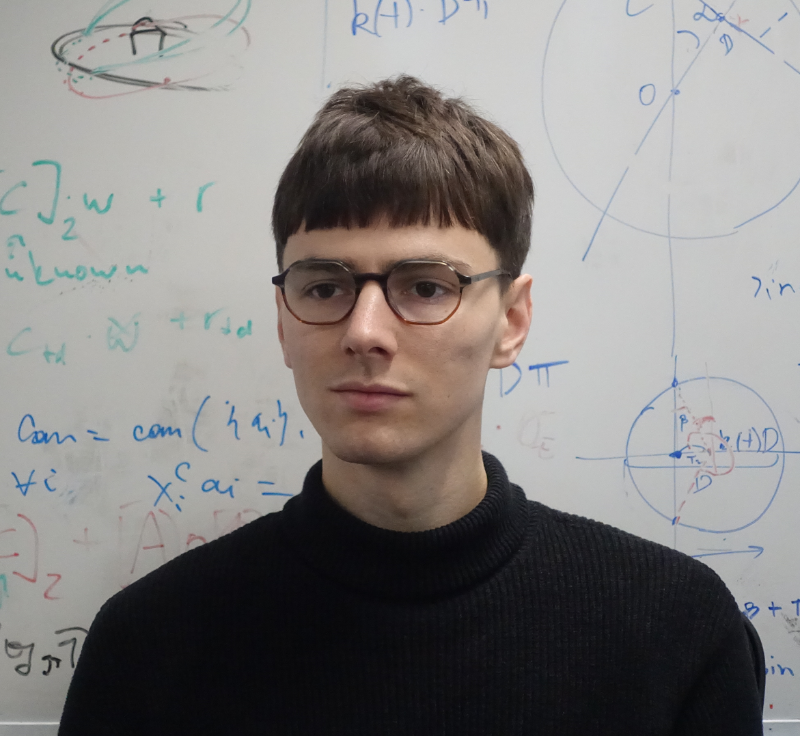

Misha Volkhov

I am a fourth year PhD student at the University of Edinburgh, BTL/LFCS, working on zero-knowledge proofs and private smart contracts, advised by Dr. Markulf Kohlweiss. I finished MPRI master's programme in 2019, and before that got my bachelor's degree from ITMO University (CT department, 2017). I have been a part of Serokell team in 2015-2018 working on several blockchain-related projects, Cardano SL being one of the biggest. My area of software dev expertise then was mostly haskell ecosystem related.
Recent projects1:
- Zero-Knowledge Arguments for Subverted RSA Groups: PKC 2023, Eprint 2023/364, code. D. Kolonelos, M. Maller, M. Volkhov.
- Zswap: zk-SNARK Based Non-Interactive Multi-Asset Swaps; PETS 2022. Eprint 2022/1002, Talk video. F. Engelmann, T. Kerber, M. Kohlweiss, M. Volkhov.
- Groth-Sahai Proofs Are Not That Scary, blog post, 06/2022. With D. Kolonelos, D. Khovratovich, M. Maller.
- Linear Relations on QAP Polynomials, blog post, 03/2021 (originally on the PRIViLEDGE EU HORIZON 2020 website).
- Snarky Ceremonies: Asiacrypt 2021. Eprint 2021/219, 4th ZKProof workshop, Talk video. M. Kohlweiss, M. Maller, J. Siim, M. Volkhov.
- Another Look at Extraction and Randomization of Groth's zk-SNARK; Financial Cryptography 21, Eprint 2020/811, Talk video. K. Baghery, M. Kohlweiss, J. Siim, M. Volkhov.
- Reasoning about Privacy in Smart Contracts, blog post 02/2020.
- Techniques, Software, and Applications for Packed Partially Homomorphic Encryption. Preprint. Master's thesis at INRIA Paris/MPRI.
Non-professional writing:
- N2023-04-13 Visualizing Estimates in org-mode's Agenda
- N2022-10-04 Про втому
- N2022-05-14 Зарисовка первого дня
Contacts:
- Email:
mikhail.volkhovАТed.ac.uk - Github: https://github.com/volhovm
- GPG key at keys.openpgp.org. FP
3B88 C427 2A0B 49C8 F0B0 A78C F962 5097 71F9 CD1A - Social media: [youtube], [instagram], [soundcloud], [mastodon] (my nickname is
volhovmalmost everywhere).
Footnotes:
1
Paper authors are sorted alphabetically in cryptography (usually), so yes, I'm always in the end of the list 🤷